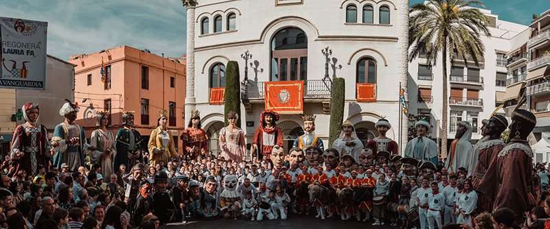

Qui som
Una colla que fa ballar i cuida els gegants, els capgrossos i l'Àliga de Badalona.
Neix la Colla de Geganters
Abans del 15 d’agost de 1986 no existia cap grup de gent estable que fes ballar i cuidés els gegants de la ciutat. Va ser aquell dia quan, per primera vegada, dalt les escales de l’Església de Santa Maria, en Ripal i na Brunel·la del Mar foren ballats per una colla de joves provinents de l’Esbart Sant Jordi.
Però, com i per què va néixer la colla? L’any 1986 s’havia fet una trobada de gegants a Badalona, just un any després de la recuperació dels gegants centenaris, l’Anastasi i na Maria. Els geganters de Terrassa, juntament amb gent d’altres entitats culturals de Badalona havien estat els encarregats de preparar l’acte i de portar els quatre gegants de la ciutat. Quan va ser l’hora de dinar, l’Anastasi i na Maria havien estat desats en un magatzem on actualment hi trobem la plaça de Pompeu Fabra (Can Fradera) i, malauradament, es produí un fet insòlit i desastrós: havien vingut corrents al menjador avisant que els gegants s’estaven cremant! Ràpidament, els 16 badalonins que havien anat a donar-hi un cop de mà es van mirar, s’aixecaren ràpidament i corregueren fins al magatzem on els gegants havien patit l’incendi. Fou llavors quan pensaren que això no es podia tornar a repetir i aquest fou el desencadenant de la formació de la Colla de Geganters de Badalona.

Quan va arribar cada figura
Anastasi i Maria
La Confraria de Sant Anastasi compra la primera parella de gegants de la ciutat.
Jeroni i Badamar
Els «gegants Reis» arriben per la Festa Major, amb una comparsa de capgrossos.
Ferrer de Gualbes i Elionor de Santcliment
Els gegants valencians s'estrenen l'1 de maig, durant les festes de Sant Anastasi.
Ripal i Brunel·la del Mar
S'estrenen el 23 d'abril, amb nou capgrossos i el Ball de Gegants i Capgrossos de Badalona.
Neix la colla
El 15 d'agost la colla balla per primera vegada, a l'escalinata de Santa Maria.
Dimonieta
La gegantona, més lleugera, s'estrena per les Festes de Maig.
Baró de Godmar i Maria Assumpta
Els gegants del barri de Pomar s'estrenen el 9 de maig.
Jeroni i Badamar tornen
Es recuperen amb una còpia feta amb fotografies i els motlles antics.
Follet i Àliga
S'estrenen per les Festes de Maig, que celebren els 140 anys d'Anastasi i Maria.
Tasi i Mariona
Els gegants petits de les escoles surten per primera vegada el 15 d'agost.
Qui porta la colla
Junta sorgida de l'Assemblea General de Socis del 18 de febrer de 2024.
- Gorka SolPresidència · Cap de colla
- Montserrat SilvestreVicepresidència
- F. Xavier NavarroSecretaria
- Clara PlaTresoreria
- Judith GispertVocalia
- Albert SánchezVocalia
- Jordi SolVocalia